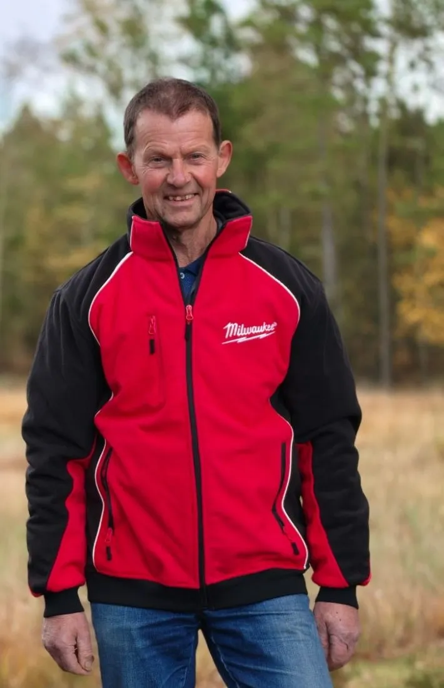

Velkommen til Ruskjærholm
Portalen danner indgangsparti til et omfattende stisystem. Langs stierne er der både nye og gamle værker, som er lavet af mennesker, der kommer på Ruskjærholm i forskellige sammenhænge og perioder.
Tryk på en skulptur for at se den stort og læse teksten.
De 3 stier
Følg pilene på skiltene. Du vælger selv, hvor meget af stien du vil opleve.
- 1,1 km den korte tur
- 2,2 km den mellemlange tur
- 3,4 km hele stien

Kunstneren
Lindy Nielsen
En stor del af de nyere træfigurer og andre konstruktioner er lavet af Lindy Nielsen, der bor i Ikast, men også har en ejendom tæt på Ruskjær.
Han er uddannet tømrer. Måske er denne baggrund med til at give ham en særlig evne til at se træernes potentialer som figur. Lindy Nielsen mistede sin mor til kræft, da han var helt ung.
Her starter stien
49 skulpturer venter på dig
Scroll ned for at følge stien
God tur!
Tak for turen. Kom gerne igen – skoven ser anderledes ud i hver årstid.
Tilbage til første station